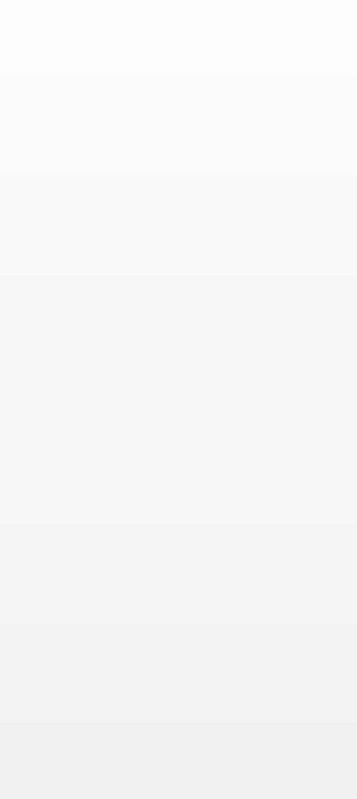
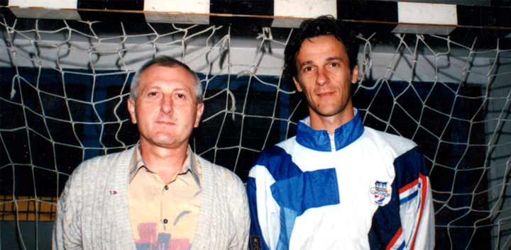
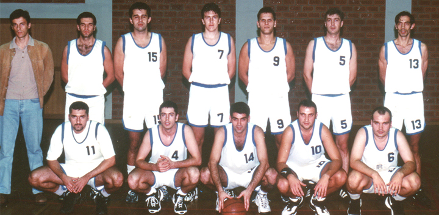
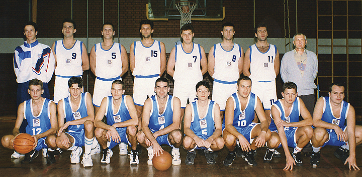

Naslovna > Vijesti





KK Rudeš je registriran i službeno počeo sa radom 06.01.1972 u sklopu SD Rudeš.
Prva uprava: predsjednik ing. Lujo Tropan, tajnik Vlado Vranešić, članovi Adam Ćurčić, Dragutin Drofenik
Prvi trener: Kruno Đurić
Prvi igrači: Lj. Travica, M. Lepur, Z. Butković, Đ. Novaković, a kasnije su još nastupali Pavić, Zbiljski, Lekić, Haramustek, Dončević, Račić....
Krajem 80-tih došlo je do zastoja u radu kluba, da bi 1991 g. pod predsjedanjem dr. Frane Jagarinca bio ponovo aktiviran.Trener momčadi je bio Vlado Pavić a igrači: M.Frlan, H. Jagarinec, T. Kanižaj, K. Jelić, T.Rački, D. Budimlija, Uranek, H. Bošnjak, D. Papac, Čutuk, S. Tumpak, Marijanović, Karačić, M.Glušac, K.Katičić, Z.Bazijanac, O.Vrdoljak, D.Lasić, M.Omazić, Ž.Pajić, S.Roglić, K.Hanžek, Lj.Borović, D.Dragić, M.Jurić, Došlić. Nakon iznenadne smrti Vlade Pavića 1993 g. za trenera dolazi Goran Bevanda.
Prva uprava: predsjednik ing. Lujo Tropan, tajnik Vlado Vranešić, članovi Adam Ćurčić, Dragutin Drofenik
Prvi trener: Kruno Đurić
Prvi igrači: Lj. Travica, M. Lepur, Z. Butković, Đ. Novaković, a kasnije su još nastupali Pavić, Zbiljski, Lekić, Haramustek, Dončević, Račić....
Krajem 80-tih došlo je do zastoja u radu kluba, da bi 1991 g. pod predsjedanjem dr. Frane Jagarinca bio ponovo aktiviran.Trener momčadi je bio Vlado Pavić a igrači: M.Frlan, H. Jagarinec, T. Kanižaj, K. Jelić, T.Rački, D. Budimlija, Uranek, H. Bošnjak, D. Papac, Čutuk, S. Tumpak, Marijanović, Karačić, M.Glušac, K.Katičić, Z.Bazijanac, O.Vrdoljak, D.Lasić, M.Omazić, Ž.Pajić, S.Roglić, K.Hanžek, Lj.Borović, D.Dragić, M.Jurić, Došlić. Nakon iznenadne smrti Vlade Pavića 1993 g. za trenera dolazi Goran Bevanda.
U vremenu od 1991 - 2007 g. KK Rudeš je nastupao u različitim razredima takmičenja: Međuopćinska liga, C1 liga, B1 liga, Otvorena liga, te A2 liga Centar od 2002 - 2007 g.
U periodu od 1993 - 2007 g. KK Rudeš je unatoč teškim uvjetima, najviše financijske priprode, naročito velikom zalaganju predsjednika dr. Frane Jagarinca i trenera Gorana Bevande, te pomoći donatora g. Ivana Malenice, g. Dragutina Poljaka, g. Muharema Hodžića, administratora g. Jakova Stipčevića i dolje navedenim igračima opstao i ostvario u tim okolnostima dobre rezultate. Bio je prvak C1 lige, finalist kupa zagrebačke regije, igra kvalifikacije za tadašnju jedinstvenu drugu ligu i pet godina bio aktivan član Hrvatske A2 lige Centar od 2002 - 2007 g.
U periodu od 1993 - 2007 g. KK Rudeš je unatoč teškim uvjetima, najviše financijske priprode, naročito velikom zalaganju predsjednika dr. Frane Jagarinca i trenera Gorana Bevande, te pomoći donatora g. Ivana Malenice, g. Dragutina Poljaka, g. Muharema Hodžića, administratora g. Jakova Stipčevića i dolje navedenim igračima opstao i ostvario u tim okolnostima dobre rezultate. Bio je prvak C1 lige, finalist kupa zagrebačke regije, igra kvalifikacije za tadašnju jedinstvenu drugu ligu i pet godina bio aktivan član Hrvatske A2 lige Centar od 2002 - 2007 g.
Dr. Frane Jagarinac i trener Goran Bevanda
Igrači koji su to ostvarili su slijedeći: LJ. Borović, J. Čulumović, M. Glušac, M. Horvat, G. Jurina, T. Kanižaj, K. Katičić, M. Momčilović, A. Mršić, T. Mustapić, I. Pešić, T. Rački, B. Radaković, T. Roglić, D. Šimić, O. Vrdoljak, N. Bashota, B. Ćosić, T. Deak, H. Jagarinec, I. Kovačević, P. Duvnjak, J. Buljubašić, V. Buljubašić, S. Majić, D. Radoš, O. Žarak, D. Razi, I. Jovičić, M. Bralić, R. Kolić, V. Miličević, Z. Gudelj, M. Simović, R. Rubin, P. Jurčević, M. Gudelj, S. Džidić, I. Matić, I. Radoš, M. Pešić, A. Mikić, J. Grabarić, H. Oroz, H. Zlatoper, B. Vlaisavljević, T. Perković, M. Ivanišević, D. Prebeg, D. Ibrahimpašić, I. Muslin, Z. Mandić, L. Reljanović, T. Novaković, K. Žganec, D. Hrga, S. Sarić, D. Filković, H. Istanbuli, M. Perčec
Momčad KK Rudeš - 1997 g.
2007 g. zbog neizdržive financijske situacije odstupili su tadašnji predsjednik dr. Frane Jagarinec i trener Goran Bevanda, te dolazi nova uprava na čelu sa novim predsjednikom g. Mladenom Miholićem.